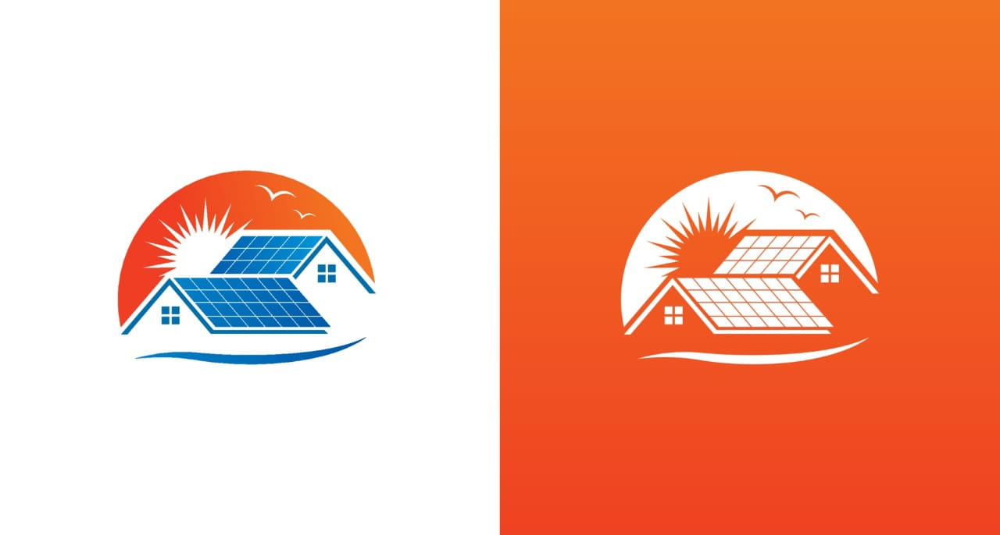

गावात सौर ऊर्जा (Solar Energy) प्रकल्प यशस्वीरीत्या राबविण्यात आला असून हा प्रकल्प संपूर्ण गावाच्या ऊर्जेच्या गरजा पूर्ण करण्यास सक्षम ठरला आहे. या प्रकल्पांतर्गत गावातील सर्व स्ट्रीट लाईट्स, पाणीपुरवठा व्यवस्था, शासकीय इमारती, तसेच शाळा या सर्व ठिकाणी सोलरवर चालणारी वीज व्यवस्था बसविण्यात आली आहे.या उपक्रमामुळे गावाची विजेची गरज पूर्णपणे भाग झाली आहे, म्हणजेच कोणतेही मासिक वीज बिल लागत नाही. त्यामुळे ग्रामपंचायतीचा आर्थिक भार कमी झाला असून, बचत झालेली रक्कम इतर विकासकामांसाठी वापरली जाते.सोलर प्रकल्पाची वैशिष्ट्ये:
गावातील रस्त्यांवरील दिवे (स्ट्रीट लाईट्स) सोलरवर चालतात.
शासकीय इमारती, शाळा, अंगणवाड्या आणि आरोग्य उपकेंद्रे या सर्व ठिकाणी सोलरऊर्जेचा वापर केला जातो.
या प्रकल्पामुळे कार्बन उत्सर्जनात घट झाली असून, पर्यावरणपूरक विकासाचे उदाहरण गावाने चालू करून दिले आहे.
प्रकल्पाची अंमलबजावणी ग्रामपंचायत आणि स्थानिक प्रशासनाच्या सहकार्याने करण्यात आली आहे.
सोलर प्रकल्पामुळे गाव ऊर्जेच्या स्वावलंबनाकडे (Energy Self-Sufficiency) वाटचाल करत आहे आणि हा उपक्रम शाश्वत विकासाचे आदर्श मॉडेल ठरत आहे
सोलर प्रकल्पाविषयी सविस्तर माहिती:
- .सौर ऊर्जा वापर, फिर टाकळी ग्रामपंचायत इमारतीमध्ये सौर ऊर्जा युनिट ग्रामपंचायत इमारतीवर बसवलेल्या असून त्याद्वारे 1kw युनिट बसवून शंभर टक्के वीजपुरवठा सौर ऊर्जेच्या माध्यमातून केला जातो याद्वारे ग्रामपंचायत कार्यालयामध्ये कॉम्प्युटर इन्वर्टर तसेच कार्यालयातील कामासाठी तयार केलेला लाईटचा वापर होतो यामुळे ग्रामपंचायतच्या लाईट बिलामध्ये बचत होऊन वीज निर्मितीमुळे ग्रामपंचायतला फायदा झाला.
- त्याचबरोबर ग्रामपंचायत कार्यालयावर सौर ऊर्जा आधारित सीसीटीव्ही बसवले असून सौर ऊर्जेद्वारे सीसीटीव्हीचे व्यवस्थापन चालते त्यामुळे सीसीटीव्ही करिता लाईटची आवश्यकता भासत नाही सीसीटीव्ही करिता असणारे सौर ऊर्जेचे पॅनल स्वतंत्ररीत्या बसवण्यात आले असून ते कार्यरत आहेत..
- जिल्हा परिषद प्राथमिक शाळेवर सौर ऊर्जा प्रकल्प राबवण्यात आलेला असून शाळेंअंतर्गत संपूर्ण लाईटचा वापर करून तिच्या माध्यमातून केला जातो सदरची सौर युनिट 3kw चे असून संपूर्ण शाळेचे इलेक्ट्रिक व्यवस्थापन, लाईट , फॅन, संगणक इत्यादी व्यवस्थापन याद्वारे केले जाते .यामुळे शाळेतील लाईट बिलात बचत झाली असून त्याचा फायदा शाळेला होत आहे.


बायोगॅस
गावामध्ये बायोगॅस वापरण्याकरता ग्रामपंचायत द्वारा शेतकऱ्यांना मार्गदर्शन करून त्या माध्यमातून पशुपालक शेतकऱ्यांनी बायोगॅसची निर्मिती केली असून त्याद्वारे हरित ऊर्जा निर्मितीचा प्रयत्न केला आहे या अंतर्गत 3 शेतकऱ्यांनी बायोगॅसची निर्मिती केली असून त्याद्वारे 3 घनमीटर बायोगॅस ची प्रति युनिट माध्यमातून निर्मिती केली असून त्याचा वापर किचन व घरगुती वापरा करिता नियमित वापर केला जात आहे.